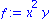
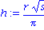
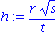
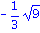
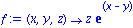
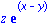
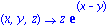

Functions of two or three variables
Expressions
Create an expression with the names of the variables you want to use.
| > | f:= x^2*y; |

| > | g:= u*v*sin(w); |
Be careful: If one of your variables already has a value, you will not get what you expect.
| > | t:= Pi: |
| > | h:= r*sqrt(s)/t; |

| > | unassign('t'); |
| > | h:= r*sqrt(s)/t; |

You can use eval to evaluate an expression at a particular point.
| > | eval( f, {x=2,y=3} ); |
| > | eval( h, {r=-1,s=9,t=3} ); |

| > | simplify( % ); |
Arrow functions (optional)
Arrow functions are an alternative to expressions. They make some things much easier and other things harder.
Here is a multivariate function defined using arrows.
| > | f:= (x,y,z) -> z*exp(x-y); |

Evaluating f at a point is easy.
| > | f(2,3,5); |

Here is how to convert between arrow functions and expressions.
| > | f(x,y,z) |
Warning, inserted missing semicolon at end of statement, f(x,y,z);

| > | unapply( z*exp(x-y), (x,y,z) ); |

![[Plot]](images/MultivariateFunctions_29.gif)